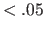
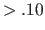
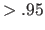

Subsections
関数 sem(), cfa(), growth(), lavaan() を利用した場合，結果を関数 summary() に渡し引数 fit.measures=TRUE にするとよい。
lavaan() で結果を fit に代入している場合，fitMeasures(fit, fit.measures="all") で全ての適合度指標が表示される。
CFIとRMSEAの組み合わせが現在必要最小限。
- chisq, df, pval: 検定結果
- fmin:
値と標本サイズから計算される乖離度。0に近いほど当てはまりが良いとされる絶対的指標だが，判定基準が決まっておらず単体で使用されることはほぼない。
- cn_05: ホルターの臨界標本サイズ（Hoelter's critical N, CN）。標本をどこまで小さくすればモデルが棄却されなくなるか。
- rmr: RMR
- srmr: RMRを標準化したSRMR。SRMR 
が多く利用される。
- gfi, agfi: GFI, AGFI。GFI, AGFI
.95 が多く利用される。検定と同様，標本サイズの影響を受けるので避けるべきとする意見もある。
- mfi, rni: MFI (McDonald's Fit Index), RNI (Relative Noncentrality Index)。大きいほど適合が良い。
- rmsea: RMSEA，RMSEA
で適合よし，RMSEA 
で適合悪し。rmsea.ci.lower, rmsea.ci.upper が90%信頼区間，rmsea.pvalue が
 : RMSEA
の検定結果。
: RMSEA
の検定結果。
独立モデルの適合が良い場合は，あまり大きな値にならない。
- nfi: NFI，独立モデルと分析モデルの
値を比較（標本サイズの影響を受ける）
- rfi, ifi, nnfi, cfi: RFI, IFI, NNFI(TLI), CFI，いずれも 0-1（概ね）で，
が目安。
データは母集団の一部でしかない。
データに完全に合致したモデルを作ると，母集団の構造とは絶対に合致しない。
一般化可能性の高いモデルを得るためには，モデルの適合を不必要に上げすぎないという観点も必要。
- PGFI pgfi, PNFI pnfi: 大きい方が良いが，基準は決まっていない。
- AIC aic, BIC bic, SABIC bic2, ECVI ecvi: AIC
SABIC
BIC の順に倹約度を重視（相対的指標）
モデル同士がネストに関係にある場合，尤度比検定を用いることができる。
関数 anova() で実行。
適合度指標ならば，ネスト関係にないモデル同士でも比較できる。（完全に同じデータセットをあてはめた場合）
Taichi Okumura
2017-11-24